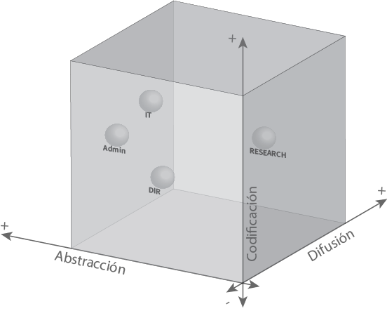

![]()
Imaginemos esta situación: Naomi, investigadora principal, acaba de identificar una oportunidad de financiación que podría transformar su línea de investigación. Para convertir esa intuición en una propuesta competitiva, su idea debe atravesar un complejo proceso organizacional que involucra múltiples departamentos, cada uno con su lógica particular de manejo del conocimiento. ¿Cómo se transforma esa idea inicial en un proyecto operativo? ¿Qué papel juega cada área en este proceso de aprendizaje organizacional?
Esta transformación no es aleatoria. Las organizaciones de I+D han desarrollado sistemas sofisticados para gestionar el conocimiento interno, sistemas que pueden analizarse usando el Social Learning Cycle como marco explicativo. Más allá de organigramas formales, existe una dinámica compleja de flujos informacionales que determina cómo se produce, codifica, abstrae y difunde el conocimiento al interior de estas organizaciones.
Más Allá del Organigrama: Agentes en el Proceso Productivo
Para entender estos flujos, analicemos la estructura típica de una organización de investigación contemporánea (e.g. aquellas con certificaciones como HR Excellence in Research o similar). Estas organizaciones presentan una arquitectura relativamente estándar que puede caracterizarse según cuatro agentes estructurales principales, cada uno ocupando una posición específica en el I-Space según su rol en el proceso productivo de conocimiento (Boisot 1995, 1998; 2011).

RESEARCH (Áreas de investigación) constituye el núcleo generativo de la organización. Su conocimiento presenta características dinámicas: codificación variable que oscila entre lo experimental y lo publicable, abstracción que va desde hallazgos específicos hasta teorías generalizables, y una orientación hacia la alta difusión y aplicación como objetivos finales. En el I-Space, RESEARCH ocupa múltiples posiciones según el momento del proceso investigativo, pero su valor organizacional radica precisamente en su capacidad de hacer circular y aplicar el conocimiento producido.
DIRECCIÓN (DIR) funciona como nexo estratégico, ocupando posiciones intermedias en las tres dimensiones del I-Space. Combina visión abstracta con conocimiento contextual específico, maneja información tanto formal como informal, y opera con niveles de difusión selectivos. Su rol es fundamental como mediador entre la lógica investigativa y la lógica administrativa.
ADMINISTRACIÓN (Admin) (que suele incluir Project Management, Gestión Económica, Legal, RRHH) se posiciona en la zona de alta codificación y abstracción, pero con difusión restringida. Maneja protocolos formalizados y reglas generalizables, transformando el conocimiento organizacional en procedimientos estandarizados y trazables. Su función es estabilizar y sistematizar los procesos.
IT (Servicios de Tecnología de la Información) ocupa la zona de máxima codificación con difusión controlada. Actúa como infraestructura informacional que sostiene todos los intercambios digitalizados, desde sistemas de gestión hasta plataformas colaborativas. Sin IT, los flujos de conocimiento contemporáneos serían impensables.
La Multimodalidad Como Condición Necesaria
Es fundamental reconocer que este proceso productivo de conocimiento no depende de canales únicos o procedimientos aislados. La colaboración y (re)producción exitosa de conocimiento requiere una multiplicidad de canales que operan simultáneamente: procedimientos formales como los que caracterizan las certificaciones HR Excellence in Research, vínculos interpersonales, proximidad física, gestión departamental interna, sistemas digitales, reuniones formales e informales, comunicación escrita y oral.
Esta multimodalidad (2009) no es redundancia organizacional, sino condición necesaria para que el conocimiento pueda circular efectivamente entre agentes con lógicas, lenguajes y culturas departamentales diferentes. Los canales formales proporcionan estructura y trazabilidad; los informales aportan flexibilidad y adaptación; los digitales facilitan acceso y almacenamiento; los presenciales permiten matices y construcción relacional.
La Figura 3 ilustra cómo estos flujos de estructuración e investigación se articulan dentro del I-Space, mostrando las múltiples trayectorias que el conocimiento puede seguir según las características específicas de cada intercambio. La posición de cada departamento no es fija, sino que representa el rango típico de operación, permitiendo adaptación según las necesidades específicas del proceso de aprendizaje organizacional.
Implicaciones para la Gestión: Ecosistemas de Canales Integrados
El análisis del I-Space y los flujos complementarios sugiere que la gestión efectiva del conocimiento organizacional requiere diseñar ecosistemas de canales que se refuercen mutuamente. El mapeo sistemático de departamentos y vínculos permite desarrollar una visión general del funcionamiento organizacional e identificar prácticas específicas que optimicen tanto interfaces individuales como el sistema completo.
La efectividad radica en combinar estratégicamente diferentes modalidades según las características del conocimiento y las necesidades del proceso. Por ejemplo, facilitar la interface RESEARCH-DIR-Admin mediante procesos relativamente automatizados y plataformas de colaboración específicas (a cargo de IT), complementándolos con reuniones presenciales en momentos críticos: durante la formalización de propuestas y una vez obtenidos los proyectos para reconocer factores relevantes que aparecen en la planificación e implementación y son difíciles o imposibles de codificar.
Las organizaciones más exitosas desarrollan competencias para mapear sistemáticamente estos canales múltiples, identificando tanto los procedimientos establecidos como las redes informales que emergen espontáneamente. Este mapeo permite detectar gaps, redundancias ineficientes y oportunidades de optimización que respeten la idiosincrasia organizacional específica.
En términos de métricas, el enfoque debe ser medir lo máximo posible (tiempo de conversión de ideas en propuestas, efectividad de feedback loops, satisfacción interdepartamental) reconociendo simultáneamente la dificultad de capturar completamente la complejidad del proceso y la necesidad de adaptar indicadores al contexto específico. El conocimiento altamente codificado puede monitorearse cuantitativamente, mientras que la traducción entre lógicas departamentales requiere evaluación cualitativa complementaria.
El objetivo no es elegir el canal “correcto”, sino coordinar estratégicamente la diversidad de canales de manera que potencien los flujos de estructuración e investigación, facilitando que el conocimiento circule, se transforme y genere valor colectivo en un ciclo continuo de aprendizaje organizacional (o Social Learning Cycle).
Reflexiones Finales
El análisis de organizaciones de I+D desde la perspectiva del Social Learning Cycle revela que el aprendizaje organizacional no es un proceso lineal, sino cíclico y distribuido. Cada departamento contribuye con capacidades específicas que son necesarias pero no suficientes por sí mismas.
La efectividad organizacional no radica en optimizar departamentos individuales, sino en diseñar y gestionar las interfaces y flujos que permiten que el conocimiento circule, se transforme y genere valor colectivo. En este sentido, la gestión del conocimiento organizacional es fundamentalmente un problema de diseño sistémico que debe reconocer y aprovechar la multimodalidad de canales como ventaja estratégica.
Las organizaciones que logran mapear y coordinar estos flujos complementarios —el flujo de estructuración organizacional (DIR-ADMIN-IT) y el flujo de investigación (RESEARCH)— desarrollan capacidades superiores de aprendizaje y producción de conocimiento. Cuando Naomi llega con su idea inicial, la organización está preparada para transformar esa intuición individual en conocimiento organizacional operativo que puede circular, aplicarse y generar nuevas oportunidades en un ciclo virtuoso continuo.
En próximas entregas exploraremos cómo estos principios se manifiestan en colaboraciones inter-organizacionales complejas, particularmente en el contexto de programas marco europeos donde múltiples organizaciones con diferentes culturas y sistemas deben coordinar sus procesos de aprendizaje para generar conocimiento colectivo a escala continental.
Esta entrada forma parte de una serie sobre gestión del conocimiento y aprendizaje organizacional. Si algo de esto resuena contigo, escribime y pensemos juntos.
Referencias
Cómo citar
@online{hulskamp2025,
author = {Hulskamp, Ian},
title = {Aprendizaje Organizacional en I+D: Cartografiando Flujos de
Conocimiento Interno},
date = {2025-07-29},
url = {https://ihulsk.github.io/posts/20250723-aprendizajeOrgID/},
langid = {es}
}